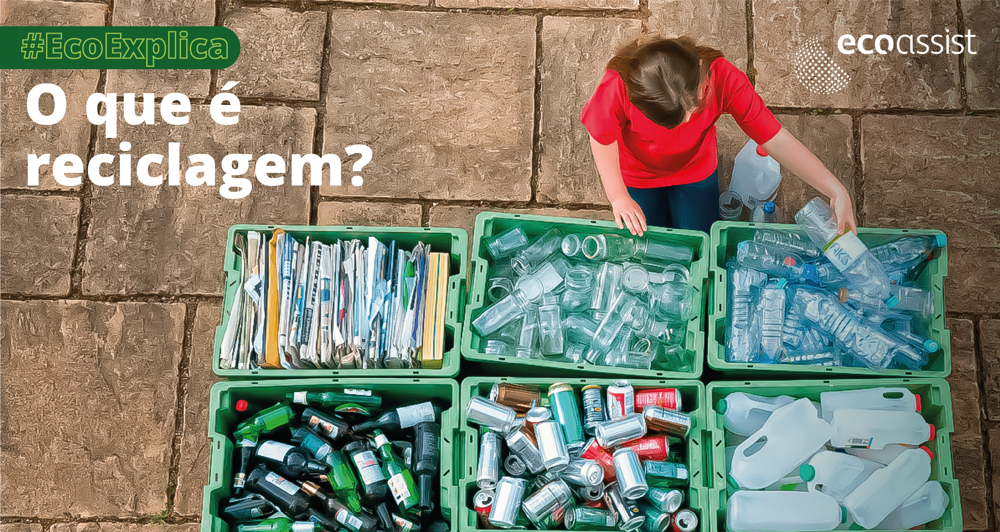
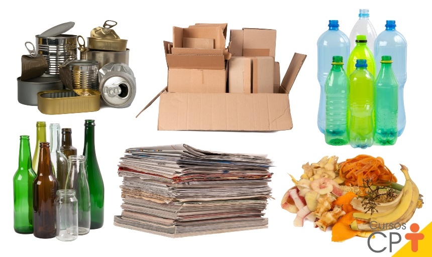
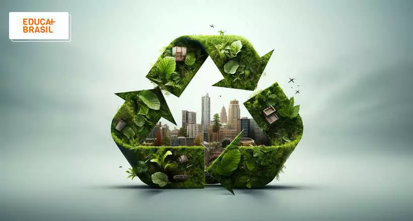
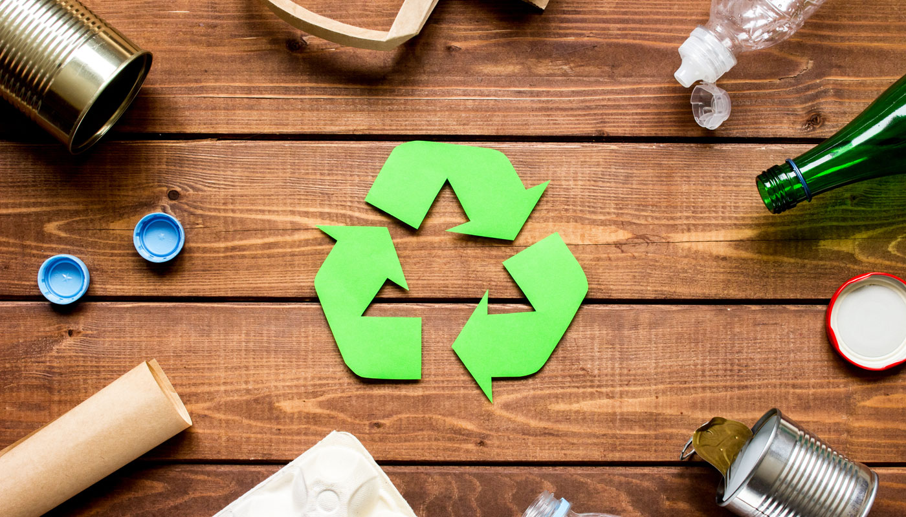

RECICLAGEM
Como separar corretamente os resíduos recicláveis?
Aprenda como separar seus resíduos e facilitar o processo de reciclagem.
Ler artigo →Descubra informações, dicas e conteúdos que ajudam a construir hábitos mais sustentáveis e comunidades mais conscientes.
A reciclagem é uma das principais formas de reduzir a quantidade de resíduos descartados incorretamente e contribuir para um futuro mais sustentável.
Assistir vídeo →Aprenda como separar seus resíduos e facilitar o processo de reciclagem.
Ler artigo →
Descubra hábitos simples que podem tornar sua rotina mais sustentável.
Ler artigo →
A informação é uma das principais ferramentas para transformar hábitos.
Ler artigo →

